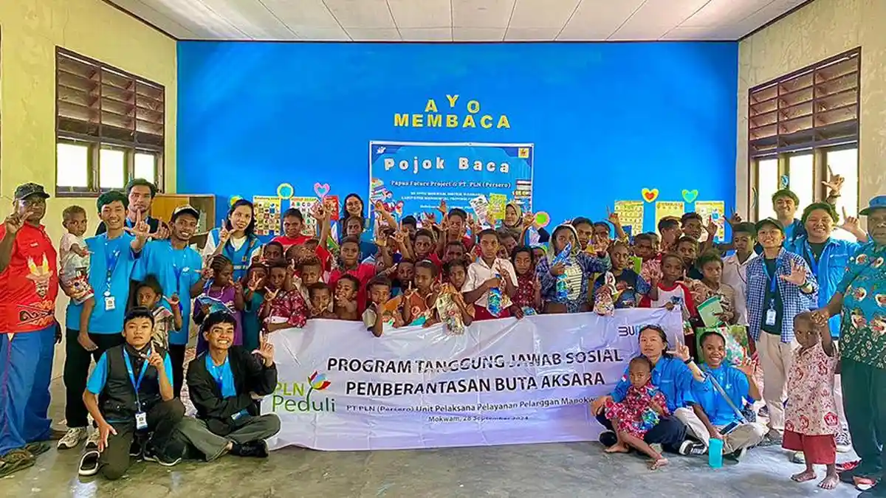

Papua Future Project
Bersama membuka akses pendidikan, kesehatan, dan kesempatan bagi anak-anak Papua Barat.

Bagaimana jika anak-anak Papua punya akses yang sama dengan anak-anak di kota? Papua Future Project hadir untuk menjawab itu — bukan dengan belas kasihan, tapi dengan kolaborasi nyata bersama komunitas lokal.
Kami percaya perubahan yang tahan lama tumbuh dari dalam kampung itu sendiri. Setiap program kami dirancang bersama warga, bukan untuk mereka.
Saat pertama kali menginjakkan kaki di Pulau Mansinam, Jordy melihat anak-anak yang semangat belajar tapi tidak punya akses. Tidak ada buku yang cukup, tidak ada guru tetap, tidak ada layanan kesehatan yang menjangkau kampung mereka.
Dari kepedulian itu, Papua Future Project lahir pada 2020 bukan sebagai lembaga besar dengan gedung megah, tapi sebagai gerakan kecil yang dimulai dari satu tenda belajar dan sekelompok relawan yang percaya bahwa setiap anak itu penting.
Lima tahun kemudian, gerakan itu sudah menjangkau 700+ anak di 13 kampung, dengan 250+ relawan dari seluruh Indonesia yang bergantian hadir memberikan dampak nyata.
Penghargaan dari Astra Indonesia atas kontribusi nyata di bidang pendidikan anak daerah terpencil.
2022 · Bidang PendidikanDipercaya UNICEF sebagai mitra potensial untuk program kesehatan dan imunisasi anak di Papua Barat.
2022 · UNICEF IndonesiaBermitra dengan Kemenkes RI dalam program edukasi gizi dan imunisasi anak di kampung-kampung Papua.
2022 · Kemenkes RIBukan sekadar statistik — di balik setiap angka ada wajah anak yang tersenyum.
Setiap program lahir dari kebutuhan nyata yang kami dengar langsung dari warga dan anak-anak di kampung.
Pojok baca, donasi buku, dan bimbingan literasi dasar serta digital untuk mempersiapkan anak-anak menghadapi dunia yang terus berubah.
Lihat programBekerja bersama UNICEF dan Kemenkes menghadirkan imunisasi dan edukasi gizi langsung ke kampung-kampung yang belum terjangkau.
Lihat programMelatih dan mendampingi pemuda Papua untuk menjadi pemimpin dan penggerak perubahan di kampung mereka sendiri.
Lihat programDonasi buku dari ribuan pendukung seluruh Indonesia akhirnya sampai ke pojok baca Pulau Mansinam.
Baca selengkapnyaKolaborasi bersama UNICEF Indonesia berhasil mengimunisasi 320 balita di lima kampung di Manokwari.
Baca selengkapnyaAngkatan keempat program pemberdayaan pemuda lokal resmi diwisuda — siap memimpin perubahan nyata.
Baca selengkapnyaKami bergerak dari jantung Kabupaten Manokwari, Papua Barat. Satu kampung ke kampung berikutnya — bukan karena target, tapi karena ada anak-anak yang menunggu.
+ 8 kampung lainnya di Papua Barat